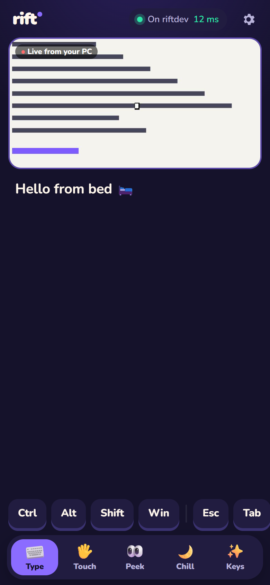
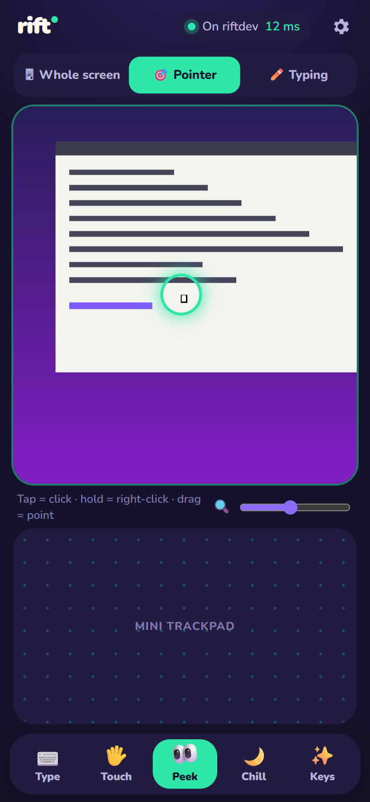
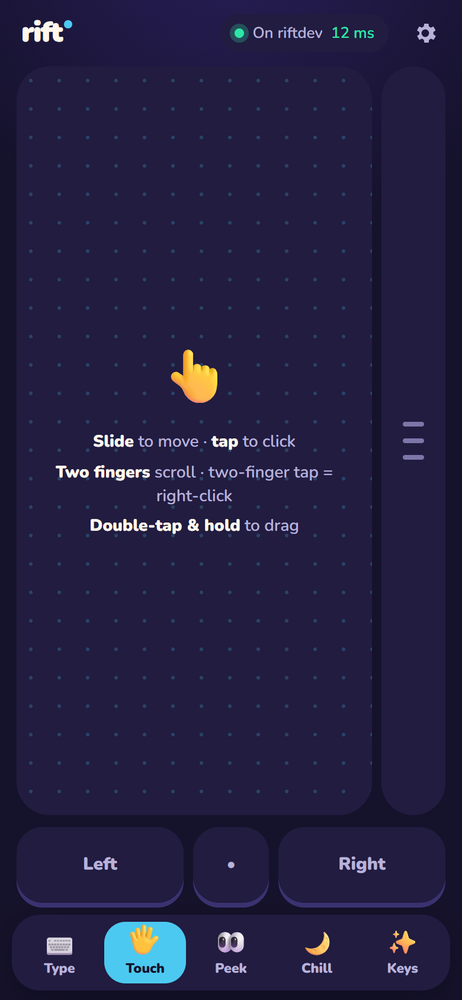
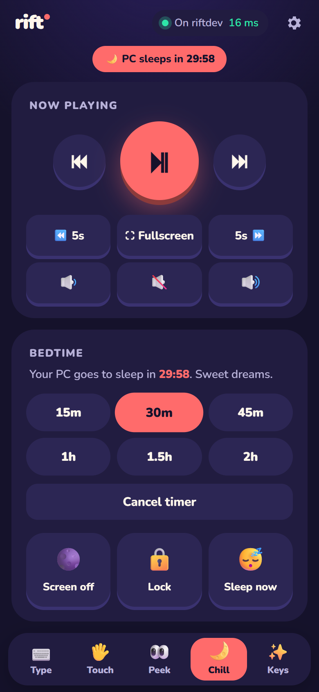

⌨️ Type
Your phone keyboard. On your PC.
Autocorrect, swipe typing, emoji, every language — and voice dictation: tap the mic on your keyboard and just talk. A live preview shows exactly where your words land.
🛋️ For everyone who's tired of the desk chair
RIFT turns the phone in your hand into your PC's keyboard, trackpad and remote — so you can keep working, browsing and watching from the couch, the bed, anywhere comfy.
No phone app to install · No account · Works on any phone


Then you remember the email you never sent. The video on your PC that's still playing. The tab you wanted to read. Getting up means the cold floor, the hard chair, the bright screen.
With RIFT, you just reach for your phone.
⌨️ Type
Autocorrect, swipe typing, emoji, every language — and voice dictation: tap the mic on your keyboard and just talk. A live preview shows exactly where your words land.
👀 Peek
See your PC's screen up close on your phone — the whole thing, or zoomed around your pointer or the text you're typing. Tap right on it to click. Hold to right-click.
🖐️ Touch
Smooth acceleration, two-finger scrolling with momentum, tap to click, two-finger tap to right-click, double-tap-and-hold to drag — plus a thumb-sized scroll strip for one-handed reading.

🌙 Chill
Big, sleepy-thumb media controls. A sleep timer for when you doze off mid-episode. Turn the screen off or lock your PC — all without getting up.

No. RIFT runs in your phone's browser — scan the QR code and you're in. Add it to your home screen for a full-screen app that reconnects automatically.
Any modern iPhone or Android phone. Your phone and PC just need to be on the same Wi-Fi.
Windows is supported today. macOS is next on the roadmap.
No. Only a phone that scanned your PC's QR code holds the key. Everything is encrypted end-to-end, and you can issue a new code at any time to unpair every phone.
Windows protects apps running as administrator (like Task Manager). RIFT tells you when that happens — run RIFT as administrator to control them too.
RIFT is free and open source.